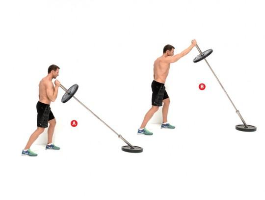
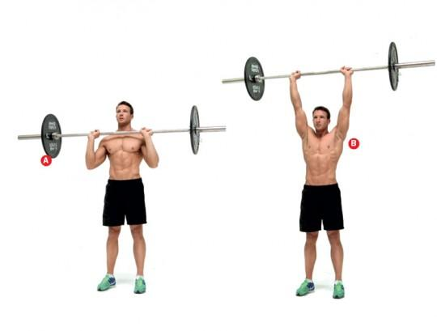

Barki
Mięśnie naramienne, potocznie nazywane barkami, to zespół mięśni, których zadaniem jest sterowanie naszymi ramionami. Wyróżniamy w nich 3 aktony: przedni, boczny oraz tylny.
Przedni akton jest motorem napędowym dla większości wyciskań nad głowę, boczny izolujemy w dużym stopniu poprzez ruch unoszenia hantli bokiem, zaś tylny ma za zadanie odwodzić ramię w tył, więc aby go zaangażować, unoszenie wykonajmy w opadzie tułowia.
Ćwiczenia - Barki
Naprzemienne wyciskanie kettli stojąc
3 x 10 powtórzeń
Zacznij klasycznie, stojąc z kettlebellami w bezpośrednim sąsiedztwie barków. Stopy rozstaw na szerokość barków, plecy trzymaj proste (A). Wyciśnij lewy kettlebell do góry, prostując rękę w łokciu (B). Wróć do startu, powtórz ruch drugą ręką. To jedno powtórzenie. Kontynuuj, unosząc kettle na zmianę, aż zaliczysz je wszystkie.

Wyciskanie końca sztangi w pozycji bokserskiej
3 x 10 powtórzeń
Zablokuj koniec sztangi (najłatwiej po prostu skorzystać z leżącego na podłodze talerza) i stań w pozycji bokserskiej (jeśli jesteś praworęczny, lewą stopę wysuń do przodu). Złap drugi koniec prawą ręką jak na zdjęciu (A). Dynamicznym ruchem wyprostuj rękę (B), wróć do startu. Po 12 repetach zamień ręce. To jedna seria.
Wyciskanie sztangi stojąc
3 x 10 powtórzeń
Stań prosto, sztangę trzymając w ugiętych w łokciach rękach tuż przed barkami (A). Stopy rozstaw na szerokość barków, możesz delikatnie ugiąć kolana. Ściągnij łopatki, plecy trzymaj proste. Wyciśnij sztangę nad głowę, prostując ręce w łokciach (B). Zatrzymaj na ułamek sekundy ruch, zanim wrócisz do pozycji startowej. I uważaj na nos, masz jeden.
